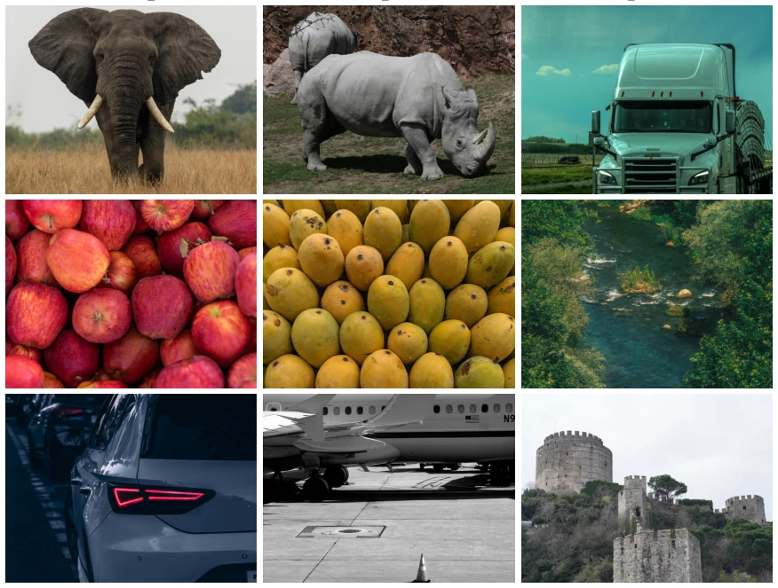

This paper did not rush to benchmark scores, but first built a "yardstick". The core contribution of ENTRAP-VL lies in redefining Contextual Entrainment in VLMs, pointing out that it is not only textual but also dual-modal. The authors are honest, not claiming to have measured specific results, but providing a Taxonomic Probe. Manually annotating 1500 data points, although the scale is not large, the introduction of "scene-relative veracity" is indeed more nuanced than simple world knowledge conflicts. However, the English limitation and pure evaluation positioning mean it is more like a research infrastructure rather than magic for directly improving performance. For groups wanting to explore VLM robustness mechanisms, this is an essential tool; for those only wanting to rank on leaderboards, they might find it not "practical" enough. It challenges the universality of existing benchmarks, emphasizing that VLM entrainment is a dual phenomenon, requiring a specially constructed instrument, rather than simply transplanting text benchmarks. This "build tool then measure model" approach is not uncommon in the Embodied AI field, but is rare in VLM evaluation, which is commendable.
Existing research mostly focuses on LLM distraction [19] or entrainment [15], but direct transfer to VLMs loses key information. VLM inputs include images, making context not only about "world knowledge truth/falsehood" but also "scene truth/falsehood" (contradictory). Existing VLM robustness work [18] mostly focuses on visual distraction length, rather than the independent pull of context on generation. Knowledge conflict research [23] is also limited to text world knowledge. Therefore, there is a lack of a dedicated tool that can distinguish text and visual independent pulls and includes a scene perception dimension. This paper aims to fill this gap, emphasizing that VLM entrainment is a dual phenomenon, requiring a specially constructed instrument. Niu et al. [15]'s framework cannot express scene-relative falsehood, while Sharma et al. [18] only measures visual distraction. This leads to an inability to answer whether VLMs are independently affected by text and visual context simultaneously, and which influence is stronger.
The overall framework is divided into Textual-Entrainment Stream and Visual-Entrainment Stream. The core is Taxonomy, based on two axes: Association (Relatable vs Random) and Veracity (True, Contradictory, Counterfactual). The text stream contains 8 conditions (e.g., relatable_true, random_counterfactual, etc.), and the visual stream contains 3 conditions (relatable_true, relatable_distractor, random_distractor). Innovations lie in: 1. Dual-modal separation, text stream fixes image/question, varies text context; visual stream fixes question, varies image. 2. Introduce Contradictory condition, i.e., scene false but world true, which pure text benchmarks do not have. 3. Short-form distractors design, ensuring any pull originates from entrainment rather than coincidence. Data is manually item-aware annotated, rather than template-generated, to ensure scene association accuracy. In the visual stream, images must satisfy semantic description but not be the answer, and avoid subword overlap. This design allows each condition to independently measure the context's "pull" on the model, rather than simple error rates.

Figure 2: Three items from the visual stream, one per row, showing the three image conditions. The abbreviated textual query and the ground-truth answer are shown at the left of each row depicting a unique category. In each row the relatable_true image depicts the answer to the query, the relatable_distractor depicts an entity partially satisfying the query’s semantic descriptors while distinct from the answer (rhino for elephant, mango for apple, airplane for car), and the random_distractor depicts an entity that does not satisfy the query’s semantic descriptors. The vehicles row illustrates that relatability tracks satisfaction of the query’s descriptors rather than visual similarity: a stone fortress is visually as imposing as a car or an airplane, yet is the random distractor because i
This paper does not report specific model results, but defines an evaluation protocol. The dataset contains 1500 items, 8 categories (creatures, electronics, etc.). Text stream 800 items, visual stream 700 items. Protocol requires comparing output distribution changes with/without context/image, calculating "pull strength". In terms of ablation, reliability is estimated via variance of different statements under the same item. Limitations lie in small scale (1500), and only supporting English. Authors emphasize this is a behavioral evaluation tool, not training data. The community can use this tool to explore susceptibility differences of different VLMs under dual-modal. The dataset will be open, encouraging subsequent research expansion. In specific evaluation, need to calculate the change in model's ground truth answer probability after injecting context, and the probability of the injected content itself. This design allows researchers to distinguish whether the model is "misled" or "enhanced". Although specific model performance is not given, the protocol itself is rigorous enough to support subsequent large-scale benchmarking.